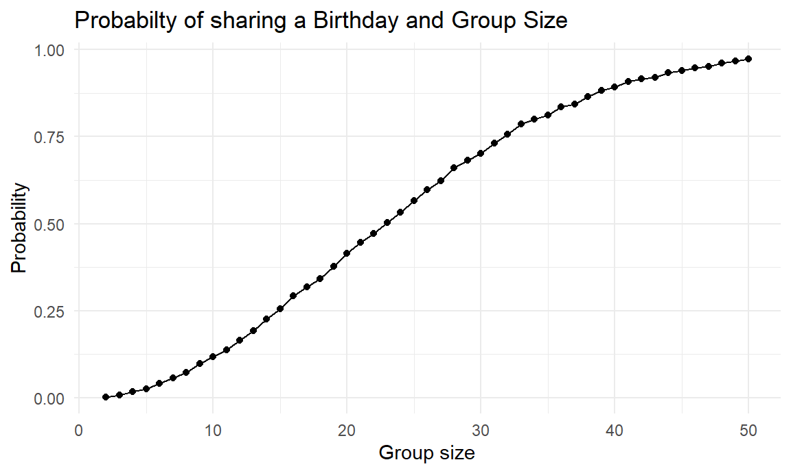
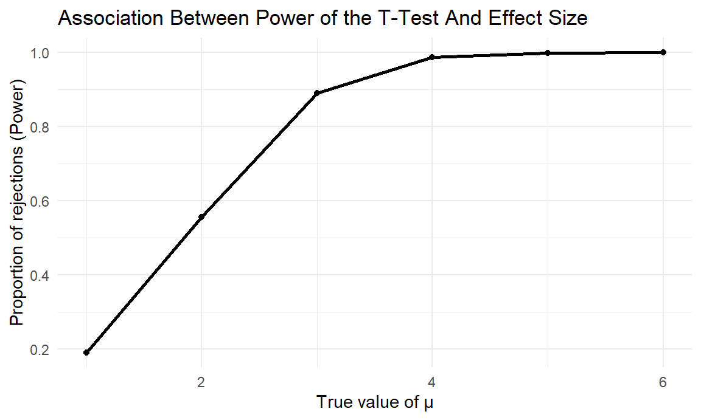
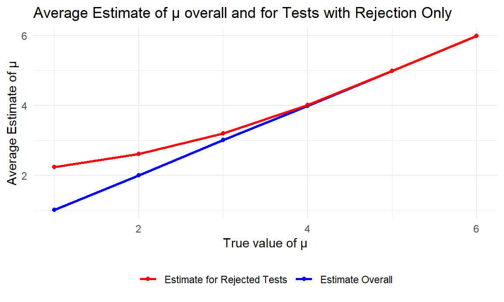
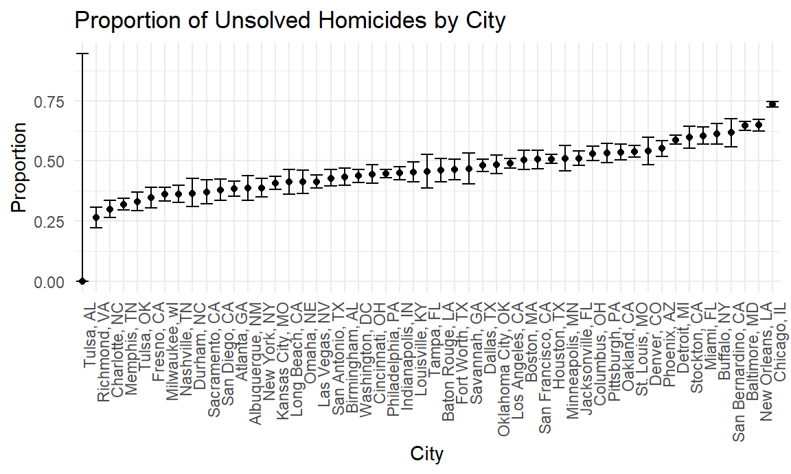

set.seed(123)
# function
sim_birthday = function(n){
birthdays = sample(1:365, n, replace = TRUE)
return(length(unique(birthdays)) < n)
}
# 10000 times
sim_birthday_df =
expand.grid(
sample_size = 2:50,
iter = 1:10000
) |>
mutate(
estimate_df = map(sample_size, sim_birthday)
) |>
unnest(estimate_df)
prob_df =
sim_birthday_df |>
group_by(sample_size) |>
summarize(
prob = mean(estimate_df)
)
# plot
ggplot(prob_df, aes(x = sample_size, y = prob)) +
geom_point() +
geom_line() +
labs(
title = "Probabilty of sharing a Birthday and Group Size",
x = "Group size",
y = "Probability"
)
There is a positive association between the probability that at least two people in the group will share a birthday and the group size.
set.seed(123)
# calculate power
my_power = function(mu_0, n = 30, sigma = 5) {
x = rnorm(n, mean = mu_0, sd = sigma)
t_result = t.test(x, mu = 0) |> broom::tidy()
tibble(
estimate = t_result$estimate,
p_value = t_result$p.value
)
}
# for mu list
sim_powers_df = function(mu_list, iteration = 5000){
expand_grid(
mu = mu_list,
iter = 1:iteration
) |>
mutate(
estimate_df = map(mu, my_power)
) |>
unnest(estimate_df)
}
# result
mu_list = 0:6
sim_results_df = sim_powers_df(mu_list)
sim_results_plot = sim_results_df |>
mutate(
rej = ifelse(p_value < .05, 1, 0)
)sim_results_plot1 = sim_results_plot |>
group_by(mu) |>
summarize(
rej_rate = mean(rej),
avg_estimate = mean(estimate),
avg_estimate_rej = mean(estimate[rej == 1])
) |>
filter(mu != 0)
# plot 1
plot1 =
ggplot(sim_results_plot1, aes(x = mu, y = rej_rate)) +
geom_line(size = 1) +
geom_point() +
labs(
title = "Association Between Power of the T-Test And Effect Size",
x = "True value of μ",
y = "Proportion of rejections (Power)"
)
plot1
Plot 1 suggests that the proportion of times the null was rejected increases with increasing effect size. They are positive associated and the power is equal to 1 after $ = 5$.
# plot 2
plot2 =
ggplot(sim_results_plot1, aes(x = mu)) +
geom_line(aes(y = avg_estimate, color = "Estimate Overall"), size = 1) +
geom_point(aes(y = avg_estimate, color = "Estimate Overall")) +
geom_line(aes(y = avg_estimate_rej, color = "Estimate for Rejected Tests"), size = 1) +
geom_point(aes(y = avg_estimate_rej, color = "Estimate for Rejected Tests")) +
scale_color_manual(
values = c("Estimate Overall" = "blue", "Estimate for Rejected Tests" = "red")
) +
labs(
title = "Average Estimate of μ overall and for Tests with Rejection Only",
x = "True value of μ",
y = "Average Estimate of μ"
) +
theme(legend.title = element_blank())
plot2
Plot 2 suggests that the sample average of $ $ across tests with rejection and the true value of $ $ are not equal, because the sample mean is significantly different from 0 in the null hypothesis, and then the p-value < .05.
url = "https://raw.githubusercontent.com/washingtonpost/data-homicides/refs/heads/master/homicide-data.csv"
raw_dat = read_csv(url, na = c("Unknown", ""))
skimr::skim(raw_dat)| Name | raw_dat |
| Number of rows | 52179 |
| Number of columns | 12 |
| _______________________ | |
| Column type frequency: | |
| character | 8 |
| numeric | 4 |
| ________________________ | |
| Group variables | None |
Variable type: character
| skim_variable | n_missing | complete_rate | min | max | empty | n_unique | whitespace |
|---|---|---|---|---|---|---|---|
| uid | 0 | 1.00 | 9 | 10 | 0 | 52179 | 0 |
| victim_last | 5764 | 0.89 | 1 | 20 | 0 | 12686 | 0 |
| victim_first | 5762 | 0.89 | 1 | 28 | 0 | 16639 | 0 |
| victim_race | 4199 | 0.92 | 5 | 8 | 0 | 5 | 0 |
| victim_sex | 4231 | 0.92 | 4 | 6 | 0 | 2 | 0 |
| city | 0 | 1.00 | 5 | 14 | 0 | 50 | 0 |
| state | 0 | 1.00 | 2 | 2 | 0 | 28 | 0 |
| disposition | 0 | 1.00 | 14 | 21 | 0 | 3 | 0 |
Variable type: numeric
| skim_variable | n_missing | complete_rate | mean | sd | p0 | p25 | p50 | p75 | p100 | hist |
|---|---|---|---|---|---|---|---|---|---|---|
| reported_date | 0 | 1.00 | 20130899.16 | 1123419.63 | 20070101.00 | 20100318.00 | 20121216.00 | 20150911.00 | 201511105.00 | ▇▁▁▁▁ |
| victim_age | 2999 | 0.94 | 31.80 | 14.42 | 0.00 | 22.00 | 28.00 | 40.00 | 102.00 | ▃▇▃▁▁ |
| lat | 60 | 1.00 | 37.03 | 4.35 | 25.73 | 33.77 | 38.52 | 40.03 | 45.05 | ▁▅▅▇▅ |
| lon | 60 | 1.00 | -91.47 | 13.75 | -122.51 | -96.00 | -87.71 | -81.76 | -71.01 | ▃▁▃▇▅ |
There are 52179 observations and 12 variables in the dataset, including 8 character variables (e.g., city, state, disposition) and 4 numeric variables (e.g., victim_age, lat).
dat = raw_dat |>
janitor::clean_names() |>
mutate(
city_state = paste(city, state, sep = ", ")
)
summary = dat |>
group_by(city_state) |>
summarize(
homicides = n(),
homicides_unsolved = sum(disposition %in% c("Closed without arrest", "Open/No arrest"), na.rm = TRUE)
)
summary
## # A tibble: 51 × 3
## city_state homicides homicides_unsolved
## <chr> <int> <int>
## 1 Albuquerque, NM 378 146
## 2 Atlanta, GA 973 373
## 3 Baltimore, MD 2827 1825
## 4 Baton Rouge, LA 424 196
## 5 Birmingham, AL 800 347
## 6 Boston, MA 614 310
## 7 Buffalo, NY 521 319
## 8 Charlotte, NC 687 206
## 9 Chicago, IL 5535 4073
## 10 Cincinnati, OH 694 309
## # ℹ 41 more rows# Baltimore, MD
baltimore_summary = summary |>
filter(city_state == "Baltimore, MD")
baltimore_test =
prop.test(
x = baltimore_summary |> pull(homicides_unsolved),
n = baltimore_summary |> pull(homicides)
)
baltimore_results = broom::tidy(baltimore_test)
baltimore_estimates = baltimore_results |>
select(estimate, conf.low, conf.high)
baltimore_estimates
## # A tibble: 1 × 3
## estimate conf.low conf.high
## <dbl> <dbl> <dbl>
## 1 0.646 0.628 0.663# Each city
summary_nest = nest(summary, data = homicides:homicides_unsolved)
my_prop_test = function(df) {
test_result = prop.test(x = df$homicides_unsolved, n = df$homicides)
test_result = test_result |>
broom::tidy() |>
select(estimate, conf.low, conf.high)
}
city_summary = summary_nest |>
mutate(
results = map(data, my_prop_test)
) |>
unnest()
city_summary
## # A tibble: 51 × 6
## city_state homicides homicides_unsolved estimate conf.low conf.high
## <chr> <int> <int> <dbl> <dbl> <dbl>
## 1 Albuquerque, NM 378 146 0.386 0.337 0.438
## 2 Atlanta, GA 973 373 0.383 0.353 0.415
## 3 Baltimore, MD 2827 1825 0.646 0.628 0.663
## 4 Baton Rouge, LA 424 196 0.462 0.414 0.511
## 5 Birmingham, AL 800 347 0.434 0.399 0.469
## 6 Boston, MA 614 310 0.505 0.465 0.545
## 7 Buffalo, NY 521 319 0.612 0.569 0.654
## 8 Charlotte, NC 687 206 0.300 0.266 0.336
## 9 Chicago, IL 5535 4073 0.736 0.724 0.747
## 10 Cincinnati, OH 694 309 0.445 0.408 0.483
## # ℹ 41 more rowsplot3 =
ggplot(city_summary, aes(x = fct_reorder(city_state, estimate), y = estimate)) +
geom_point() +
geom_errorbar(aes(ymin = conf.low, ymax = conf.high)) +
labs(
title = "Proportion of Unsolved Homicides by City",
x = "City",
y = "Proportion"
) +
theme(
axis.text.x = element_text(angle = 90, hjust = 1)
)
plot3